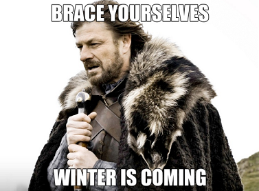
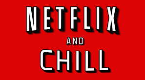
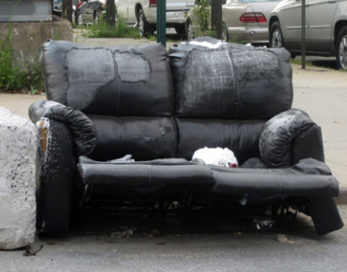

TV-serier
Kort redovisning av vad som gör serier trevlig underhållning.
Winter Is Coming
...någon gång åtminstone. Tittar man tillbaka i tiden var serier "fyrkantiga". Det saknades kontinuitet mellan avsnitten. Det var innan Internet slog genom på riktigt. Man bänkade sig framför sin tv och avnjöt all horribel reklam. Formatet hade ett dåligt rykte av de branschaktiva och produktionsvärdena låg mellan mjäkig och icke existerande.
Sen på 2000-talet började det ske något. Kvaliten höjdes och plötsligt hade vi Firefly som Fox fumlade bort. kort därefter kom "The Wire" och Oz som var det helt vansinnigt bra. Detta har bara blivit bättre med tiden och senaste åren har vi fått serier som Breaking Bad, Game of Thrones och så vidare.
Say My Name... Heisenberg
TV-serier är i slutändan bra underhållning. man får ett bättre djup än filmer och det är mycket slappare än att läsa bok.